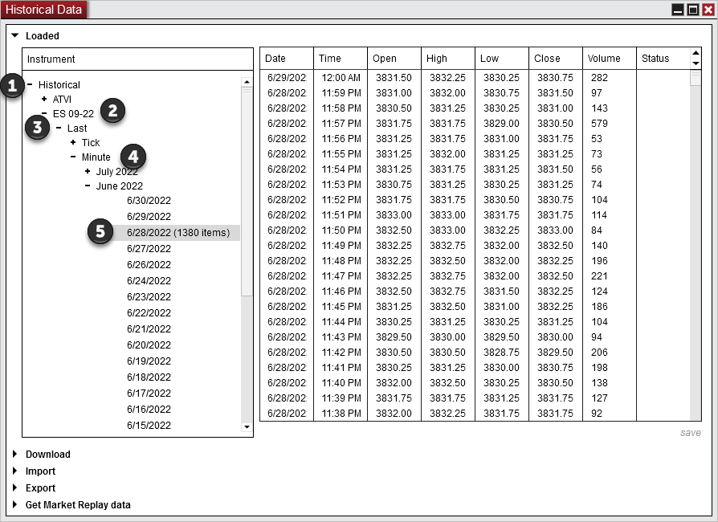
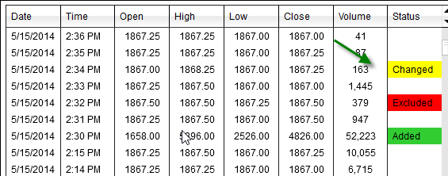
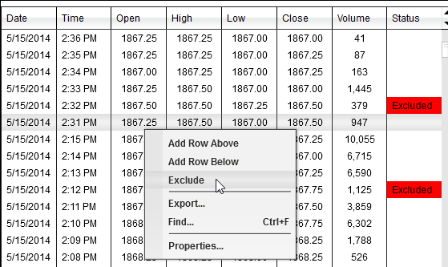
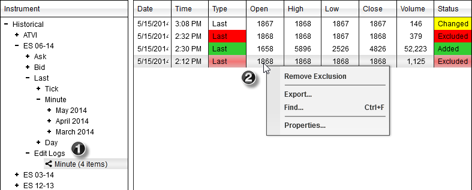
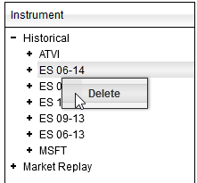

|
<< Click to Display Table of Contents >> Editing |


|
Editing
|
<< Click to Display Table of Contents >> Editing |
|
Historical data saved in NinjaTrader can be edited via the Edit section of the Historical Data Window.
Editing Historical DataIt is important to understand that the historical data you wish to edit must currently be saved in NinjaTrader as provided by the data provider or collected live. Please see the "Historical & Real-Time Data" section of the Help Guide for more information. If you do not have data, it can be downloaded from your data provider if they offer it by using the Load tab of the Historical Data Window.
To edit historical data available within NinjaTrader:
The data for that data type and date will be shown in the data grid.

•Changing data - Double left mouse click on a cell in the Open, High, Low, Close or Volume column to edit the data value. •Adding data - Left mouse click on a row to select it. Then right mouse click to access the options to Add a new data row. •Excluding data - Right mouse click on the desired row and select the menu item Exclude to exclude the data. Excluded data is data that is intentionally ignored and not used. NinjaTrader will remember this excluded data on a historical data reload. •Any changes that are made are both color coded as well as shown in the Status column. The status column will report when any data has been modified from original values.

Once the desired changes are made, press "save" in the bottom right hand corner of the Edit tab to save the changes within NinjaTrader.
Note: If more than one row contains the same Date, Time and price values, all similar rows will be edited. Excluding DataTo exclude data right click on the row of data to be excluded and select "Exclude". Note: All rows with the same date and time will be automatically excluded by NinjaTrader.

Using the Edit Logs
 |
Historical data saved in NinjaTrader can be deleted via the Loaded section of the Historical Data Window.
Deleting Historical DataIt is important to understand that the historical data you wish to delete must currently be saved in NinjaTrader as provided by the data provider or collected live.

To delete historical data saved in NinjaTrader:
1.Left mouse click on any node available in the Edit tab of the Historical Data Window to select it. 2.Right mouse click and select the menu item Delete or press the 'Delete' key on your keyboard to delete all data contained in the node.
Note: Deleted historical data will be replaced when data is reloaded from the connectivity provider. Please see the "Excluding Data" sub-section of the "How to edit historical data" section above for more information on excluding data, which will remain excluded when reloading data from the data provider. |